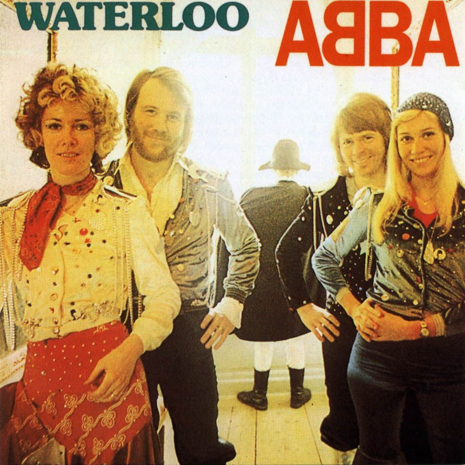

Home
(current)
Contacto
Grupos musicales
Lista de enlaces
Google
Wikipedia
Search
ID
Grupo musical
Artista principal
Años
Disco más exitoso
1
Queen
Freddie Mercury
Muere a los 45 años
2
Love of Lesbian
Santi Balmes
50 años
3
Abba
Anni-Frid Lyngstad
75 años

4
Maldita Nerea
Jorge Ruiz Flores
45 años
5
ACDC
Angus Young
65 años
6
La oreja de Van Goth
Leire Martínez
41 años